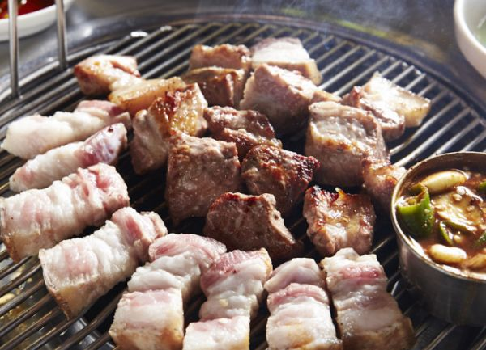
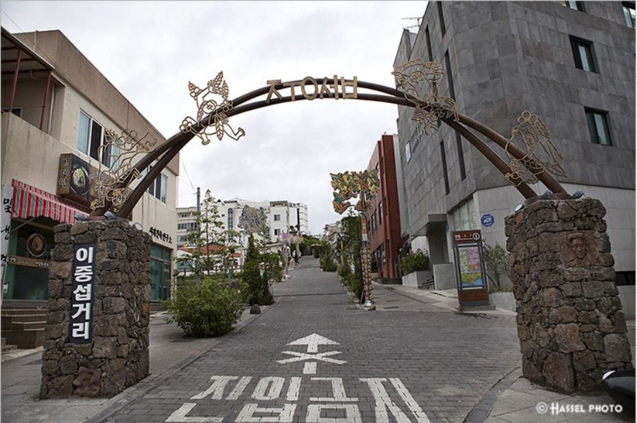
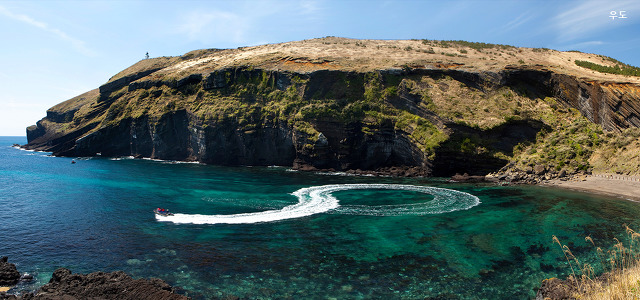
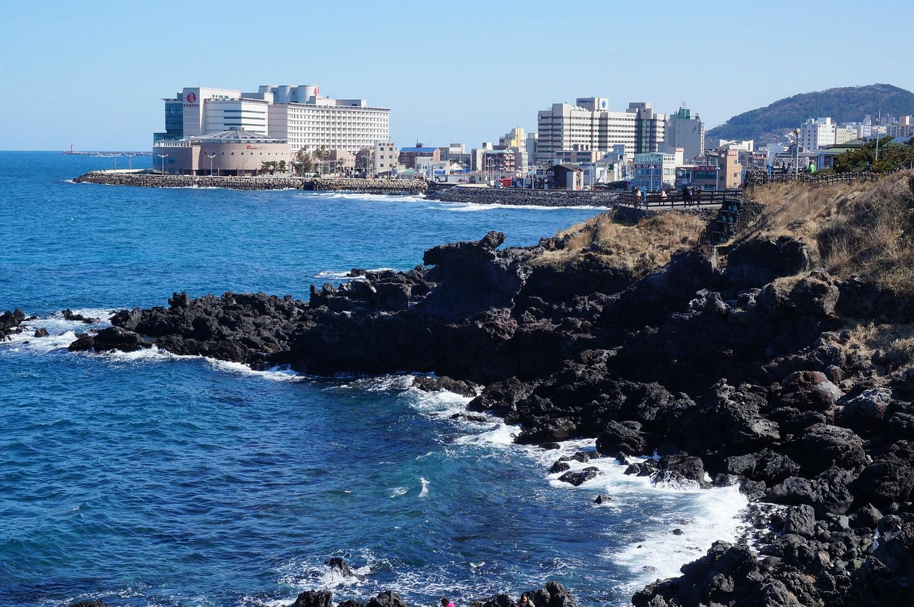
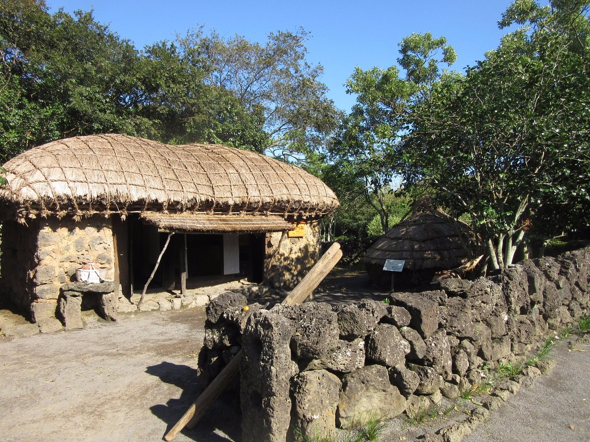

제주도는 대한민국의 남해에 위치한 섬이자 대한민국에서 가장 큰 섬입니다.
제주도는 섬이라는 독특한 지리환경과 옛탐라국의 역사가 깃든 특이한 민속문화로 하여 다른 곳에서는 볼 수 없는 고유한 관광성을 자랑합니다.
Food
제주 흑돼지 삽겹살
⭐️⭐️⭐️⭐️⭐️
제주도에 간다면 꼭 한번은 먹어봐야할 제주 흑돼지 삽겹살.
도톰한 고기 사이에서 나오는 육즙이 입맛을 사로잡으며, 일반 돼지고기와는 다른 부드러운 고기의 식감을 느낄 수 있습니다.
가격이 부담되거나 간단하게 맛만 보는 정도라면 흑돼지구이 정식을 추천합니다!
통갈치 조림

⭐️⭐️⭐️⭐️
크고 고운 은빛과 통통한 살로 유명한 제주 갈치에 각종 다양한 해산물까지!
귀한 제주 갈치는 비싼 값임에도 불구하고 수입산 갈치와 비교하면 맛이 좋아 관광객들에게 한결같은 인기를 끌고 있다고 합니다.
만약 점심시간에 간다면 예약을 하고 가는것을 추천합니다!
View
이중섭 문화거리
⭐️⭐️⭐️⭐️
'황소'라는 작품으로 유명한 화가 '이중섭'이 거주했던 초가를 중심으로 형성된 문화거리
작가의 산책길과 함께 유토피아로 불리는 탐방로도 있어 천천히 둘러보기에 딱 좋은 곳입니다.
우도
⭐️⭐️⭐️⭐️
제주도안에 또다른 제주도라 불리는 '우도' 제주도가 품은 섬중에 가장 아름다운 곳
제주도에서도 배를타고 가야하니 날씨를 꼭 확인해주세요!
제주 동문재래시장

⭐️⭐️⭐️⭐️⭐️
제주 동문재래시장은 제주에서 가장 크고 오래된 재래시장 입니다. 야채, 생선, 과일 뿐만아니라 생활용품, 의류까지 판매하며 다양한 먹거리까지 있는 시장입니다.
왠지 모를 따뜻함과 정겨움이 가득한 재래시장을 꼭한번 가보는것을 추천합니다!!
Landmark
용두암
⭐️⭐️⭐️⭐️⭐️
용이 포요하며 바다에서 솟구쳐 오르는 형상을 따 용두암이라 이름지어졌습니다. 전설에 의하면 인근 계곡 용연에서 살던 용이 승천하려다가 돌로 굳어졌다고 합니다.
용두암을 제대로 감상하려면 서쪽으로 100m정도 떨어진곳이 적당하며 파도가 심하게 몰아치는 날이 적격이라 합니다.
↓용두암 위치 ↓
제주특별자치도 제주시 용두암길 15
성읍 민속마을
⭐️⭐️⭐️⭐️⭐️
성읍민속마을은 조선 태종 16년 성산읍 고성리에 설치된 정의현청이 세종 5년 이곳으로 옮겨진 후, 500여 년간 현청소재지였던 유서 깊은 마을입니다.
마을 내에 마련되어 있는 전통 민박에서 머물며 문화유산과 공존하며 살아가는 마을 주민들의 삶을 느껴볼 수도 있습니다.
성읍민속마을 이용시간
기간 : 연중무휴
시간 : 상시 개방